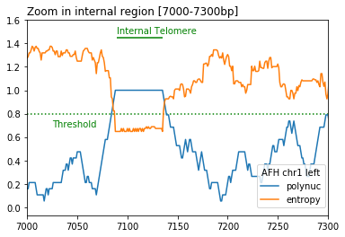
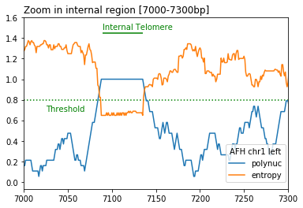

Telofinder¶
A python package to determine the location and the size of telomeric repeats from genome assemblies (both terminal and internal ones). Telofinder can run either on a single (multi)fasta file or on a directory containing multiple files. It outputs 3 csv and 2 bed files containing the telomere calls and their coordinates either as raw output or after merging consecutive calls"
- Telomere detection is based on calculation in a sliding window of the following two metrics:
DNA sequence entropy < entropy_threshold (default=0.8)
proportion of polynucleotides (default_list = ["CC", "CA", "AC"]) > polynuc_threshold (default=0.8)
 

From a python shell:
from telofinder import analyze_telom_length as atl
import matplotlib.pyplot as plt
df, telo_df, telo_df_merged = atl.run_telofinder("../telofinder/data/AFH_chrI.fasta", 0.8, 0.8, 8000)
df_res = df.reset_index()
df_W = df_res['level_3'] == "W"
ax1 = (
df_res[df_W].loc[:, ["polynuc", "entropy"]]
.plot()
.legend(loc="center left", bbox_to_anchor=(0.75, 0.15))
)
ax1.set_title("AFH chr1 left")
plt.ylim(top=1.6)
plt.hlines(0.8, xmin = 0, xmax = 8000, colors='green', linestyles='dotted')
plt.text(3000, 0.75, 'Threshold', ha ='left', va ='top', color='green')
plt.hlines(1.45, xmin = 0, xmax = 246, colors='green', linestyles='solid')
plt.text(0, 1.55, 'Terminal Telomere', ha ='left', va ='top', color='green')
plt.hlines(1.45, xmin = 7080, xmax = 7160, colors='green', linestyles='solid')
plt.text(6000, 1.55, 'Internal Telomere', ha ='left', va ='top', color='green')
plt.title("Telomere detection in the first 8kb", loc="left")
ax2 = (
df_res[df_W].loc[:, ["polynuc", "entropy"]]
.plot()
.legend(loc="center left", bbox_to_anchor=(0.75, 0.15))
)
ax2.set_title("AFH chr1 left")
plt.ylim(top=1.6)
plt.xlim(0, 600)
plt.hlines(0.8, xmin = 0, xmax = 600, colors='green', linestyles='dotted')
plt.text(300, 0.75, 'Threshold', ha ='left', va ='top', color='green')
plt.hlines(1.45, xmin = 0, xmax = 226, colors='green', linestyles='solid')
plt.text(0, 1.55, 'Terminal Telomere', ha ='left', va ='top', color='green')
plt.title("Zoom in terminal region [0-600bp]", loc="left")
ax3 = (
df_res[df_W].loc[:, ["polynuc", "entropy"]]
.plot()
.legend(loc="center left", bbox_to_anchor=(0.75, 0.15))
)
ax3.set_title("AFH chr1 left")
plt.ylim(top=1.6)
plt.xlim(7000, 7300)
plt.hlines(0.8, xmin = 7000, xmax = 7300, colors='green', linestyles='dotted')
plt.text(7025, 0.75, 'Threshold', ha ='left', va ='top', color='green')
plt.hlines(1.45, xmin = 7089, xmax = 7135, colors='green', linestyles='solid')
plt.text(7089, 1.55, 'Internal Telomere', ha ='left', va ='top', color='green')
plt.title("Zoom in internal region [7000-7300bp]", loc="left")
{kind=link}
{kind=link}
{kind=link}
{kind=link}
{kind=link}
{kind=link}
Installation¶
install (mini)conda:
add channels:
$ conda config --add channels conda-forge bioconda
install the telofinder package:
$ git clone https://github.com/GillesFischerSorbonne/telofinder.git
$ cd telofinder
$ conda env
$ python setupy.py install
Usage¶
$ conda activate telofinder
$ python telofinder path_to_file(s)
telofinder runs both on single and multiple (multi)fasta file(s).
telofinder outputs 3 csv and 2 bed files containing the telomere calls and their coordinates, either as raw output or after merging consecutive calls
Reference¶
-
base_compos(sequence, base)[source]¶ Counts the number of a given base in a sequence
- Parameters
sequence -- fasta sequence
base -- base to count in the sequence
- Returns
the number of that base in the sequence
-
classify_telomere(interval_chrom, chrom_len)[source]¶ From a list of tuples obtained from get_consecutive_groups, identify if interval corresponds to terminal or interal telomere
-
compute_metrics(window, polynucleotide_list=['AC', 'CA', 'CC'])[source]¶ Compute entropy and polynucleotide proportion in the sequence window
- Parameters
window -- sliding window
polynucleotide_list -- a list of polynucleotides, default value is ["AC", "CA", "CC"]
- Returns
a dictionary of entropy and polynucleotide proportion of the sequence window
-
count_polynuc_occurence(sub_window, polynucleotide_list)[source]¶ Define presence of polynucleotide in the window.
- Parameters
sub_window -- the sequence of a sub_window
polynuleotide_list -- a list of polynucleotides. Note that all polynucleotides must be of the same size
- Returns
a boolean for the presence of the sub_window in the polynucleotide list
-
export_results(raw_df, telom_df, merged_telom_df, raw_outfile='raw_df.csv', telom_outfile='telom_df.csv', merged_telom_outfile='merged_telom_df.csv', bed_outfile='telom.bed', merged_bed_outfile='telom_merged.bed', outdir='telofinder_results')[source]¶ Produce output table files
-
get_consecutive_groups(df_chrom)[source]¶ From the raw dataframe get start and end of each telomere window. Applied to detect start and end of telomere in nucleotide positions.
-
get_entropy(window)[source]¶ Calculate the entropy of the window DNA sequence
- Parameters
window -- sliding window
- Returns
entropy value of the sequence window
-
get_polynuc(window, polynucleotide_list)[source]¶ get the propbortion of polynuceotides in the window
- Parameters
window -- sliding window
polynucleotide_list -- a list of polynucleotides. Note that all polynucleotides must be of the same size
- Returns
total polynucleotide proportion in the sliding window
-
get_strain_name(filename)[source]¶ Function to get the strain name from the name of the fasta file
- Parameters
filename -- path of fasta file
- Returns
sequence name
-
output_dir_exists(force)[source]¶ Function to test if the 'telofinder_results' output diretory already exists.
- Parameters
force -- overwrites the output directory otherwise exits program --force or -f
- Returns
nothing
-
parse_arguments()[source]¶ Function to parse and reuse the arguments of the command line
- Parameters
fasta_path -- path to a single fasta file or to a directory containing multiple fasta files
force -- force optional, overwrites the output directory otherwise exits program, optional
entropy_threshold -- optional, default = 0.8
polynuc_threshold -- optional, default = 0.8
nb_scanned_nt -- number of scanned nucleotides at each chromosome end, optional, default = 20 000
- Returns
parser arguments
-
run_on_fasta_dir(fasta_dir_path, polynuc_thres, entropy_thres, nb_scanned_nt)[source]¶ Run iteratively the telemore detection algorithm on all fasta files in a directory
-
run_on_single_fasta(fasta_path, polynuc_thres, entropy_thres, nb_scanned_nt)[source]¶ Run the telomere detection algorithm on a single fasta file
- Parameters
fasta_path -- path to fasta file
- Returns
a tuple of df, telo_df and telo_df_merged
-
run_telofinder(fasta_path, polynuc_thres, entropy_thres, nb_scanned_nt)[source]¶ Run telofinder on a single fasta file or on a fasta directory
-
sliding_window(sequence, start, end, size)[source]¶ Apply a sliding window of length = size to a sequence from start to end
- Parameters
sequence -- fasta sequence
start -- starting coordinate of the sequence
end -- ending coordinate of the sequence
size -- size of the sliding window
- Returns
the coordinate and the sequence of the window